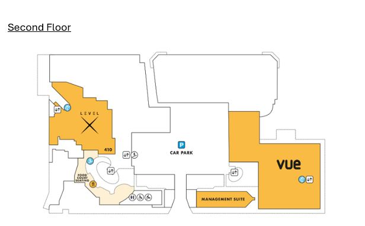
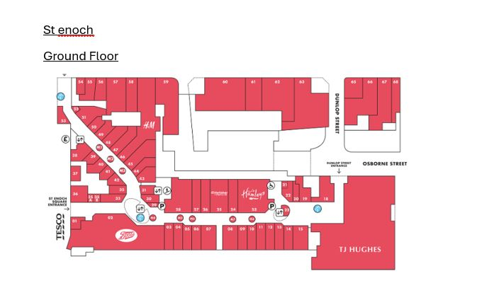
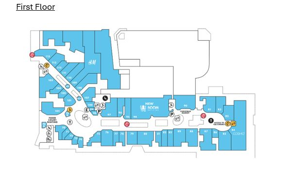
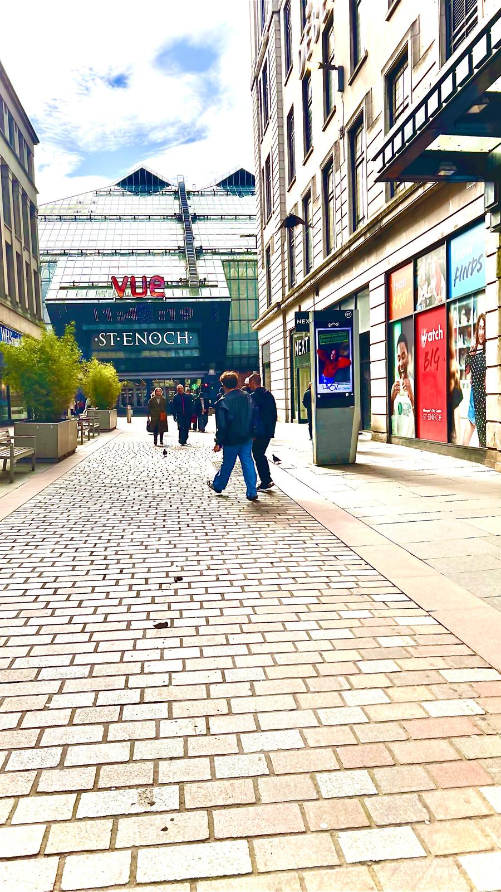

St. Enoch Centre is one of Glasgow's most iconic shopping destinations,
located in the heart of the city. It’s known for both its shopping experience and various attractions.
Here are some key highlights:
Wide variety of shopping options, including high street brands and specialty stores.
Numerous dining choices, from fast food to casual restaurants and cafes.
Historic St. Enoch Fountain and unique Victorian architecture.
Proximity to cultural attractions like George Square and The Lighthouse.
Convenient access via St. Enoch Subway Station and ample parking facilities.
Seasonal events and promotions throughout the year.
1. Shopping:
• Wide Variety of Stores: St. Enoch Centre offers a great selection of stores, including high street brands like
Debenhams, Primark, River Island, Superdrug, and H&M. It has everything from fashion to home goods, beauty,
and accessories.
• Jewelry & Accessories: The mall also has stores like Pandora and Clinton Cards, ideal for gifts or special treats.
2. Dining Options:
• Food Court: The centre has a spacious food court with a variety of fast food and casual dining options,
including places like McDonald's, KFC, Subway, and Pizza Hut.
• Cafes and Restaurants: St. Enoch is also home to several cafés and casual restaurants where you can take a break and
enjoy a coffee or meal.
3. St. Enoch’s Fountain & Architecture:
• St. Enoch Fountain: Outside the St. Enoch Centre, you’ll find the historic St. Enoch Fountain, a beautiful and iconic
part of the area. It’s a great place to relax, take photos, and enjoy the surroundings.
• Victorian Architecture: The centre itself features impressive Victorian architecture, and its original design gives it
a unique charm compared to more modern malls.
4. Entertainment:
• Nearby Attractions: The area surrounding St. Enoch is full of other attractions, such as George Square, The Lighthouse
(Scotland’s Centre for Design and Architecture), and The Gallery of Modern Art (GoMA).
These are easily accessible from the centre and offer cultural and artistic experiences.
• Street Performers: St. Enoch Square and the surrounding areas are often home to street performers, adding a lively,
artsy atmosphere to the area.
5. St. Enoch Subway Station:
• The St. Enoch Subway Station is right next to the shopping centre, making it easily accessible by public transport.
It’s a great hub for getting around the city and a convenient point for visitors.
6. Seasonal Events:
• Christmas and Holiday Events: St. Enoch Centre is a popular spot during the festive season, with its Christmas
decorations, lights, and holiday events. The Christmas Market often takes place nearby, and the mall itself becomes a
magical place to visit in December.
• Promotions and Sales: The centre frequently hosts sales, special promotions, and events throughout the year,
so there's always something to look forward to.
7. Nearby Attractions:
• The River Clyde: Just a short walk away, you can visit the River Clyde for a scenic walk or enjoy attractions like
the Glasgow Science Centre and Titanic Belfast.
• Shopping on Argyle Street: Right next to St. Enoch Centre, you’ll find Argyle Street, which is lined with shops,
cafés, and restaurants, making it a vibrant part of Glasgow’s shopping district.
8. Accessibility and Parking:
• Parking: St. Enoch Centre has its own car park, which makes it easy for visitors to drive to the mall. It’s located
in a central spot, and there are also plenty of public transport links to the area.




The ST Enoch Centre is open 7 days a week.
• Monday - 09:00 - 18:00
• Tuesday - 09:00 - 18:00
• Wednesday - 09:00 - 18:00
RETAIL OPENING HOURS
Retail opening hours vary. Please check with individual stores.
RESTAURANT & LEISURE OPENING HOURS
Restaurant, Cinema, Boom Battle Bar & Level X opening hours vary. Please check with individual operators.
St. Enoch: is a located in the heart of the Glasgow.
This is family-friendly shopping hub with a mix of fashion, toys, homeware, popular eateries,
great for kids and easily accessible to public transport.
To visit St. Enoc Glasgow City Centre Shops.